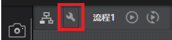
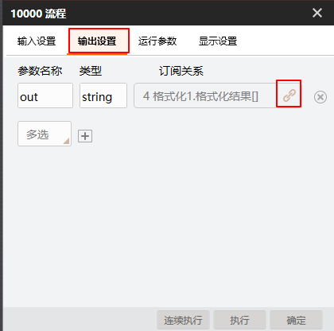
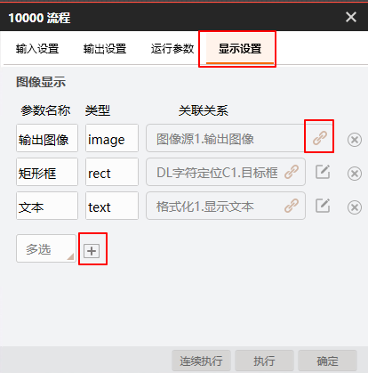
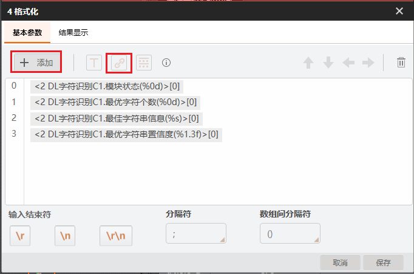
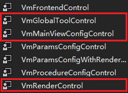
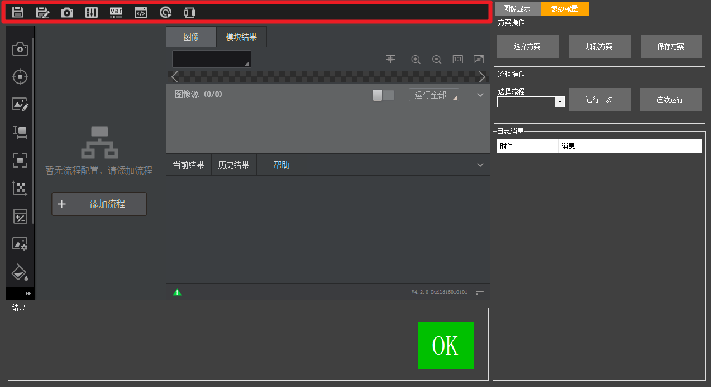

一、应用场景
本案例作为VM二次开发的OCR识别案例，适用场景为需要使用深度学习进行OCR识别的场景。
二、搭建方案
示例方案路径：./PlatformSDKSampleCS/OCRDemoCs/OCRDemo.sol
本演示案例为应用案例，软件和具体方案是强相关的。可加载设计好的方案，该演示方案为Demo文件夹下的OCRDemo.sol方案。若导入其他案例提供的方案，则需进行相关配置方可运行出正确结果。
-
使用VisionTrain1.4.1训练平台进行深度学习模型训练得到两个训练模型，文件后缀为bin。分别为CnnCharDetect.bin（字符定位模型）和CnnOcrRecog.bin（字符识别模型）。
-
在VisionMaster中拖拽图像源模块加载图像。
-
使用DL字符定位模块进行字符串的定位。
-
使用DL字符识别模块进行识别。
方案的数据结果经过格式化模块汇总，并在流程“输出设置”中订阅，可在二次开发中拿流程输出结果，降低二次开发软件与具体模块的耦合性。
开发获取结果的是流程输出的“out”参数，开发渲染控件RenderControl绑定的渲染为图像源图像、DL字符定位输出矩形框、格式化文本，具体操作如下：
-
点击流程图标旁边的小扳手图标进入流程配置窗口。

-
点击【输出设置】，其中参数名称下面的“out”（区分大小写）即为开发获取的参数名，点击“订阅”，选择格式化作为绑定数据，具体如下图所示。

-
点击【显示设置】，点击“加号”可增加需要的渲染，点击“订阅”按钮可绑定渲染内容，配置方式如下图所示。

-
配置格式化模块内容。
格式化模块必须配置正确。若使用时修改了案例自带的方案，特别是修改格式化模块订阅的数据，则必须参照案例自带的方案进行格式化模块配置，格式如下图所示。
其中，主要包含：DL字符识别模块的模块状态、最优字符个数、最佳字符串信息、最优字符串置信度。

三、二次开发
在Visual Studio中直接调试运行，或者在 bin 目录下双击OCRDemoCs.exe 运行。OCRDemo界面如下图所示。
操作逻辑：
-
弹出软件运行界面后，在方案操作区域点击【选择方案】，选择完成后点击【加载方案】。
-
在流程操作区域选择需要执行的流程名，点击【单次运行】或【连续运行】即可执行流程。
先是选择方案函数和加载方案函数，然后是执行一次函数，最后是流程执行回调函数（用于获取算法执行结果）。其中，流程执行回调需要在构造函数中进行注册。
本案例的主要函数包括：方案加载、单次执行、连续执行、注册方案状态回调、获取结果、方案保存和渲染界面绑定。
-
方案加载
VmSolution.Load(strSolutionPath);
VmSolution.Load(strSolutionPath,”***”);
-
单次执行
procedure = VmSolution.Instance[“流程1”] as VmProcedure;
procedure.Run();
-
连续运行
procedure.ContinuousRunEnable = true;
procedure.ContinuousRunEnable = false;
-
方案状态回调
VmSolution.OnWorkStatusEvent += VmSolution_OnWorkStatusEvent;
private void VmSolution_OnWorkStatusEvent(
VM.
PlatformSDKCS.ImvsSdkDefine.IMVS_MODULE_WORK_STAUS workStatusInfo)
{
if (workStatusInfo.nWorkStatus == 0 && workStatusInfo.nProcessID == 10000)
{
}
}
-
结果获取
string strResult = procedure.ModuResult.GetOutputString(“out”).Value.astStringVal[0].strValue;
-
方案保存
-
渲染界面绑定
if(VmSolution.Instance[“流程1”]!=null)
{
renderControl1.ModuleSource = (VmProcedure)VmSolution.Instance[“流程1”];
}
本案例涉及3个控件，分别为VmRenderControl控件、VmMainViewConfigControl控件和VmGlobalToolControl控件。

-
VmRenderControl控件：用于渲染图像数据。

-
VmMainViewConfigControl控件：用于显示流程配置。

-
VmGlobalToolControl控件：用于显示全局配置工具。
